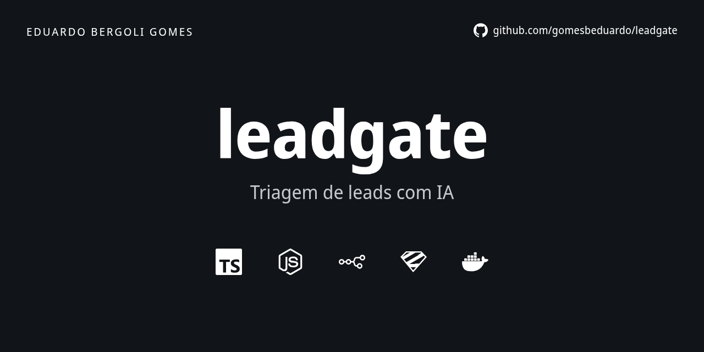

leadgate
Assistente de IA que faz a triagem de leads no chat de uma empresa de climatização e entrega a vendas um JSON validado. Protótipo em fase de teste, com a CentralEng como piloto fictício.
Problema
Uma empresa de ar-condicionado recebe pedidos pelo site sem triagem. No mesmo lugar chegam o escritório que precisa de manutenção, o apartamento que a empresa não atende, o pedido de outra cidade e o spam. O time de vendas gasta tempo separando o que vale uma ligação.
Um formulário com campos fixos não confirma uma cidade escrita errada nem percebe uma emergência. As regras de negócio, porém, são fechadas: quais serviços, quais segmentos, quais cidades.
O que fiz
Um chat que coleta o mínimo (serviço, segmento, cidade e, depois, nome e telefone) e decide se o lead é qualificado. O modelo propõe e o código decide: a saída é um JSON conferido por regras determinísticas, com a próxima ação (perguntar, encaminhar para vendas, encerrar ou encaminhar para uma pessoa).
Travas em camadas impedem o agente de prometer preço ou prazo e de negar que é uma IA. Empresa, cidades e textos ficam em configuração, fora do código. A validação roda num serviço Node chamado pelo n8n por HTTP.
Resultados
No conjunto reservado, 6 casos rodados uma única vez, os campos de serviço, cidade, urgência, qualificação e próxima ação acertaram 6 de 6; segmento acertou 5 de 6. No conjunto de regressão, 9 casos de falhas passadas, todos os campos acertaram 9 de 9. A regeneração é rara: média de 1,13 tentativa por turno no reservado.